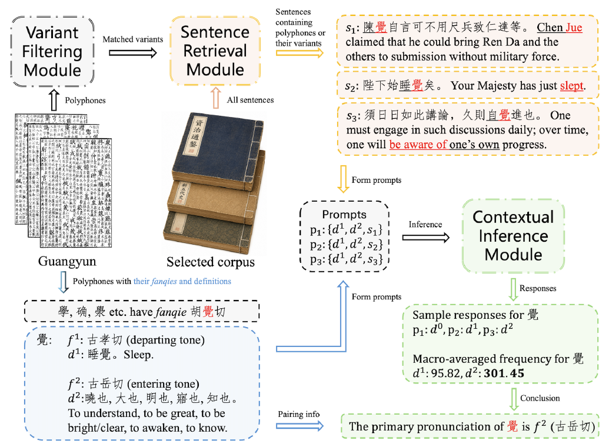
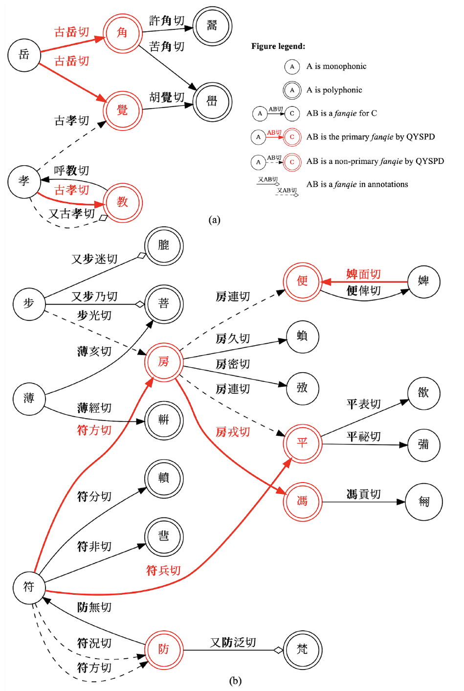
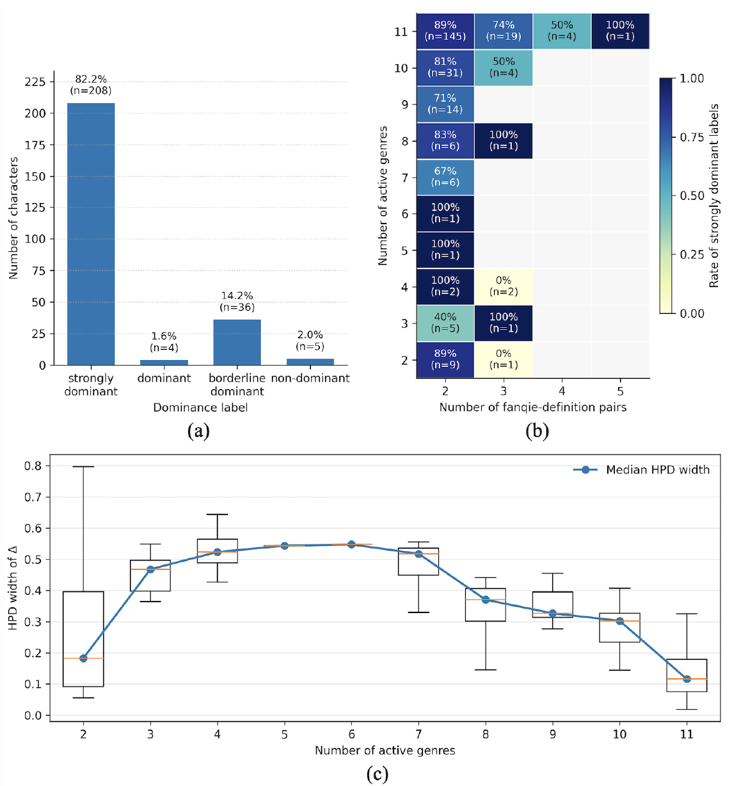

研究问题
反切上字提供声母，下字提供韵母与声调。多音字在为其他字注音时，其自身的读音歧义会沿反切关系传递，构成继承性歧义。
QYSPD（Qieyun System Polyphonic-character Disambiguation）以《广韵》为字书依据，结合宋代语料中的语境释义，推断多音反切字的常读音及其对应的主反切。
反切上字提供声母，下字提供韵母与声调。多音字在为其他字注音时，其自身的读音歧义会沿反切关系传递，构成继承性歧义。
QYSPD（Qieyun System Polyphonic-character Disambiguation）以《广韵》为字书依据，结合宋代语料中的语境释义，推断多音反切字的常读音及其对应的主反切。

语料含综合史籍与十类经典文本，共 371 个文件。综合史籍包括《资治通鉴》《新五代史》《新唐书》《续资治通鉴长编》。
| 分组 | 文件数 | 字符数 | 平均每文件字符数 |
|---|---|---|---|
| 综合史籍（Comprehensive） | 4 | 12,173,725 | 3,043,431 |
| 易学（Yi） | 14 | 824,914 | 58,922 |
| 佛教（Buddhist） | 187 | 2,167,657 | 11,591 |
| 史学（History） | 11 | 2,733,876 | 248,534 |
| 儒家（Confucian） | 30 | 3,682,135 | 122,737 |
| 道家（Taoist） | 33 | 2,845,983 | 86,241 |
| 医学（Medical） | 18 | 4,039,125 | 224,395 |
| 哲学（Philosophy） | 16 | 705,627 | 44,101 |
| 艺术（Art） | 22 | 217,614 | 9,891 |
| 诗词（Poetry） | 17 | 458,178 | 26,951 |
| 文集（Anthology） | 19 | 4,752,204 | 250,116 |
各分组数值按论文表 1 列示。

论文分别构建上字与下字有向多重图：对于被注音字 A，反切上字 U 与下字 L 分别形成 U → A 和 L → A 的边。
《广韵》反切图中共有 1,684 个不同反切用字，其中 377 个为多音字；经过预处理和异常情况筛查，253 个进入完整 QYSPD 流程。
| 统计单位 | QYSPD 已处理 | C4：释义碰撞 | C5：稀见字 |
|---|---|---|---|
| 歧义词条数 | 9,646 | 247 | 31 |
| 不同歧义反切数 | 1,373 | 55 | 10 |
论文表 2。词条以一个读音为单位，表内数字不是不同字的数量。
论文基于各体裁的释义计数建立 Dirichlet 后验，并进行 5,000 次采样。208 个字呈强优势（82.2%），4 个呈优势（1.6%），36 个为边界优势（14.2%），5 个无优势（2.0%）。
“强优势”要求所选释义的跨体裁平均概率超过 0.5 的后验概率至少为 0.95；其余情况根据所选释义与最强竞争释义之差的 95% 最高后验密度区间分类。这是对模型释义计数的优势诊断，不是与人工真值比较的准确率。

以下比较仅使用十类经典文本，不含综合史籍。基线为温度 0.7 的 Qwen2.5-7B。
| 模型 / 温度 | 主反切一致率 ↑ | 平均 JS 距离 ↓ | ||
|---|---|---|---|---|
| 全部 | 强优势 | 全部 | 强优势 | |
| Qwen2.5-7B · 温度 0.1 | 0.9407 | 1.0000 | 0.0299 | 0.0276 |
| Qwen2.5-7B · 温度 0.3 | 0.9328 | 1.0000 | 0.0326 | 0.0285 |
| Qwen2.5-7B · 温度 0.5 | 0.9407 | 0.9904 | 0.0290 | 0.0256 |
| Qwen2.5-7B · 温度 0.9 | 0.9249 | 0.9952 | 0.0334 | 0.0302 |
| InternLM3-8B | 0.8115 | 0.8669 | 0.1254 | 0.1221 |
| Qwen3.5-9B | 0.8283 | 0.9017 | 0.1289 | 0.1189 |
论文表 3。JS 距离比较各体裁中的候选反切—释义分布；一致率越高、JS 距离越小，表示与基线越接近，而非准确率越高。
结果以《广韵》体系与本研究抽取的宋代书面语料为范围。模型执行语境释义选择，主反切通过字书的释义—反切配对关系推断。
C4 类的 30 个字存在释义碰撞，需要其他字书或音韵证据补充；C5 类的 12 个稀见字在所选语料中各不足 20 次，需要扩大文献覆盖。